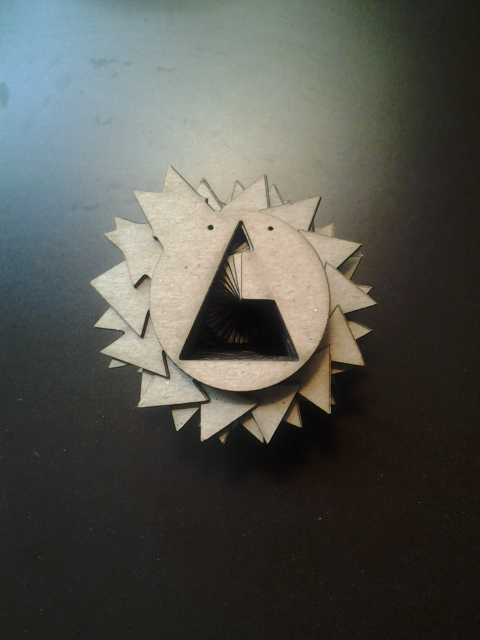
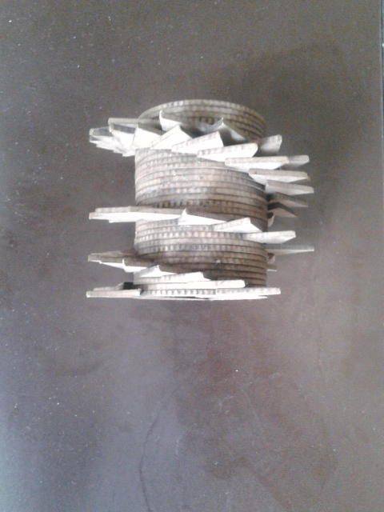
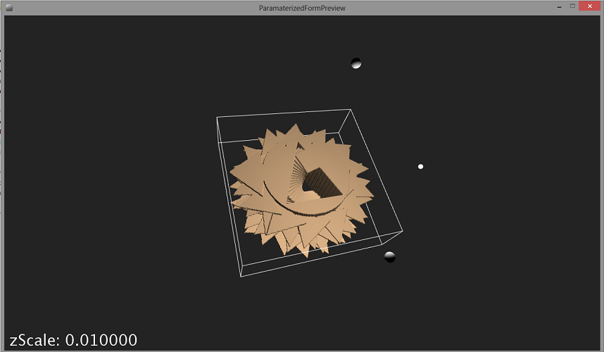
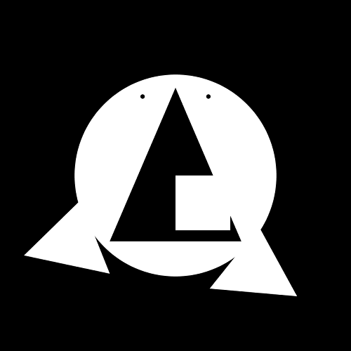
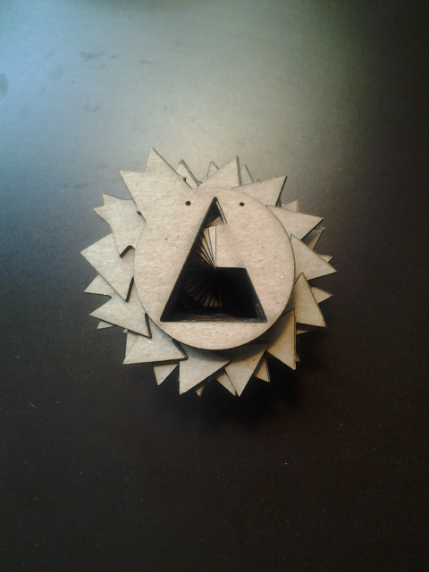
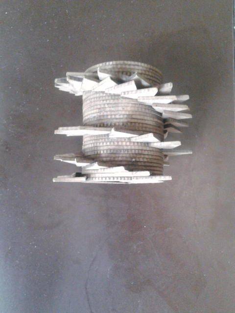
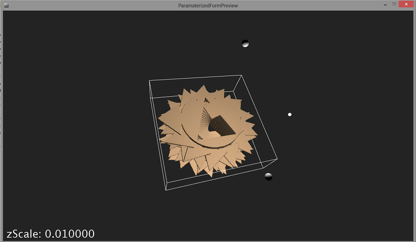
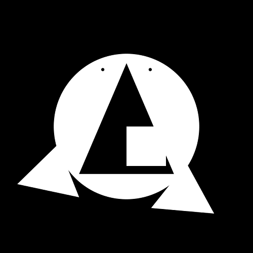

Projects
Past Portfolios
My first Portfolio site was made as part of a project for my first ever HTML class. There were a lot of firsts with this.
My second Portfolio was created after graduating and I was still looking for a job. The motive for the redesign was to apply more skills from my toolbox such as adding in JavaScript but also have a better user experience.

Seoulful Traveler
The first iteration of this website started off as site to display what I had learned in class. We had free range to do whatever we wanted so I created a website that suggest places to travel while in Seoul, South Korea. These suggestion are based off my own experiences while studying abroad there.
For the second iteration, I wanted to focus on making the images a more promenent part of the site and giving the it amodern feel but also making it into a single page as there is no real reason for it the be multiple pages.
History of the Internet
This site initially started off as a project for one of my college classes. After learning how to use JavaScript, the objective was to use javascript and three different jQuery widgets in a website.
However, quite some time has past and this really needed to be updated. This time around I focused on improving the UI and UX as well as making site responsive.
Since this is a history site would it not make more sense to make it into a timeline? This gives users a better sense of time by displaying events in the order that they happen. There was no major content changes just reordering and updating what was already existing.
Image Gallery
This was a final project for my web programming class. Our task was to recreate a website based off a PDF the Instructor gave us using the knowledge we had gained over the semester in HTML5, CCS3, and Javascript.
Video Art Exploration
This project focused on modes of inquiring, probing and experimenting. Goal was not to create narrative structures or persuasive speech (the dominant form in video composition), but rather to try something uncertain, to provoke, to confound or even confuse, to evoke an emotion, or to illuminate.
The process was to experiment and try things, to see what worked and then dig deeper into them. There were three phases to create the video. In phase one, the task was to create a 45-90 second video filming thing we found interesting. In phase two, the task was to create a revised 60-120 second video based on feedback received during class discussion of videos. Lastly, phase three was to create final video keeping in mind feedback received during class discussion on video two.
 







Animation and Laser Cutter
The goal of this project was to create an animation and then bring that animation to life as an abstract sculpture. Using Processing, we created animations. These animations were complied as a series of images and sent to a laser cutter. From there the cut out images needed to be assembled. To get to the final form it went through two iterations which can be seen above.
Interactive Object Animation
The goal of this project was to use an inanimate object and animate it when a user clicked on or hovered over it. In my animation, my inspiration was a radio with the characteristics of a dog. When you hover over it, it will sit up and wag its antenna.

Interactive Character Animation
The goal of this project was to create a character animation that is controlled by keyboard input. To interact with character, click on the screen. Use the left and right arrow keys to move character. You can also make her jump by using the up key.